|
马丁·帕尔
马丁·帕尔（Martin Parr）出生于1952年，童年时代在祖父的启发下对摄影产生兴趣，后来在曼彻斯特大学专攻摄影。1994年，经过一番针对其极富挑衅性的摄影风格的激烈讨论，最终帕尔成为玛格南图片社的正式成员。2004年马丁·帕尔被委任为威尔士大学的摄影学教授，同年还被任命为阿尔勒聚会的客座艺术总监。 马丁·帕尔的作品剑走偏锋，不走常规老路，实际上引领了近年来兴起的"概念摄影"的先潮。以帕尔的观点，道德败坏及生活琐事的荒谬无常意味着我们只能从某种幽默感中获得救赎。像《无聊的夫妇》、《常识》这样的作品就描绘了现代生活的陈词滥调、枯燥和缺乏意义。 |
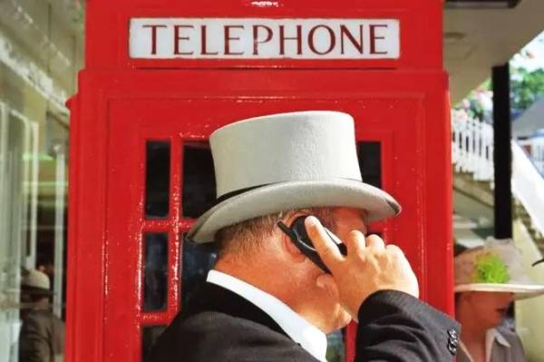
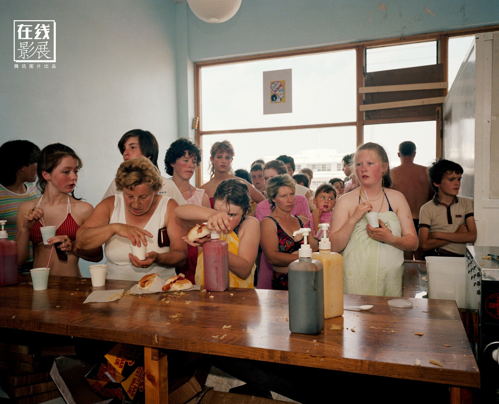
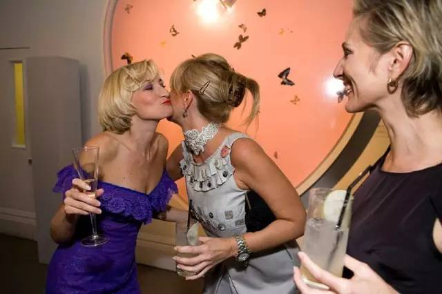

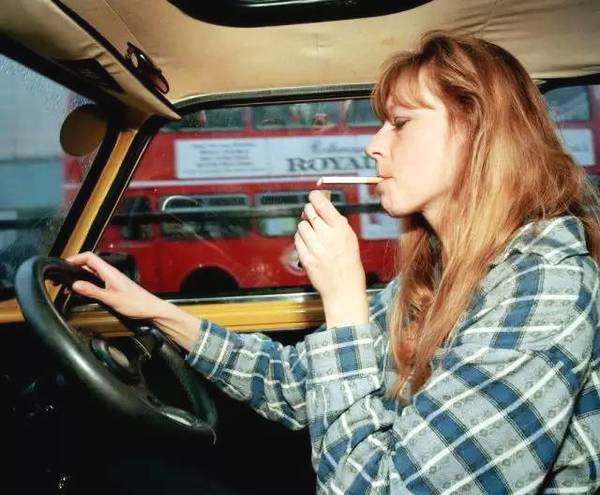
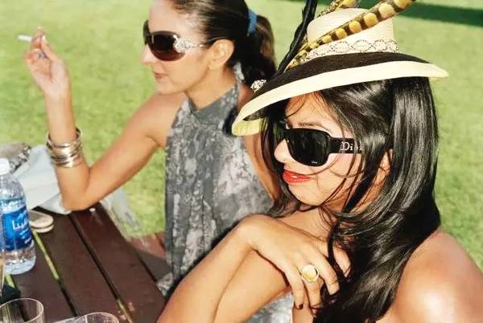
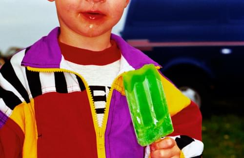
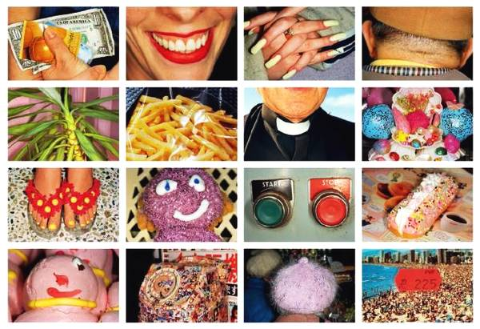
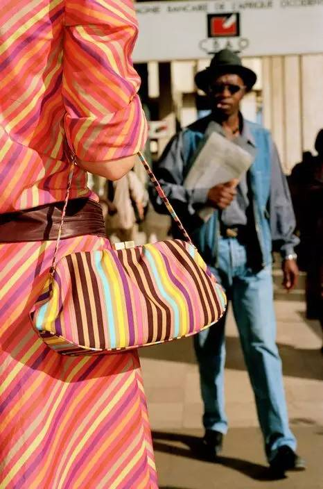
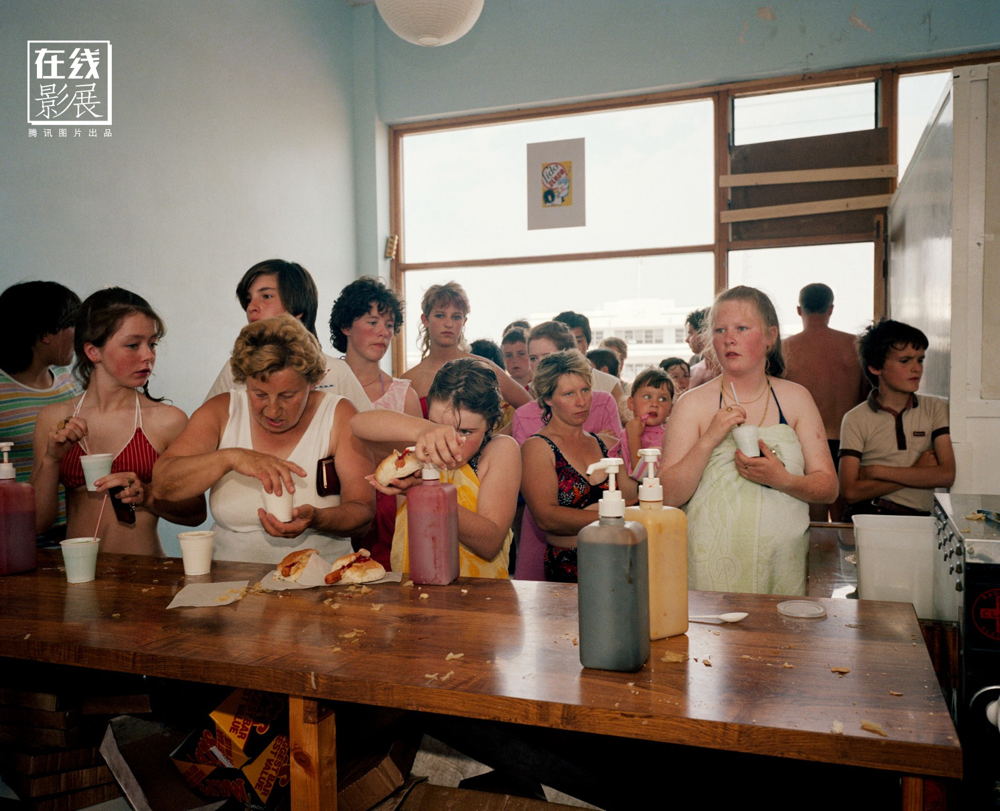
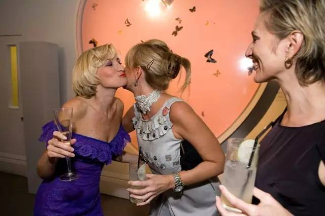
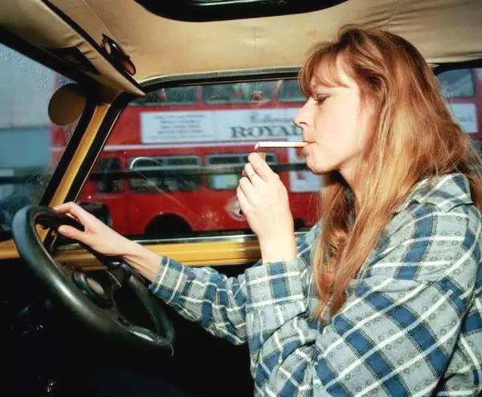
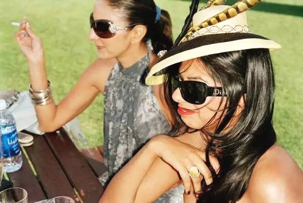
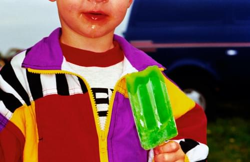
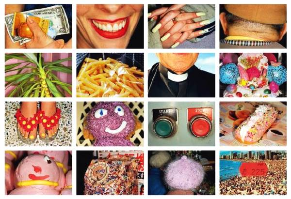
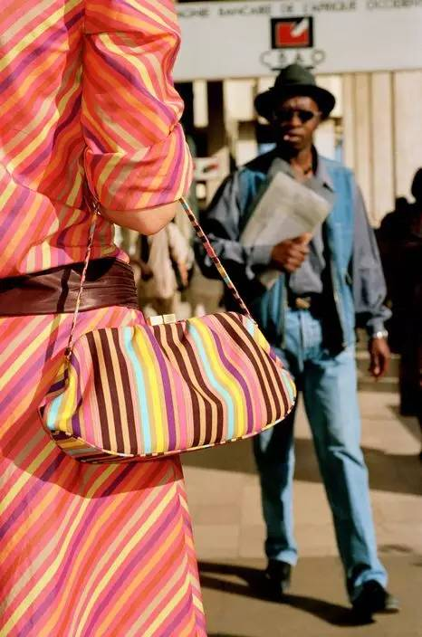